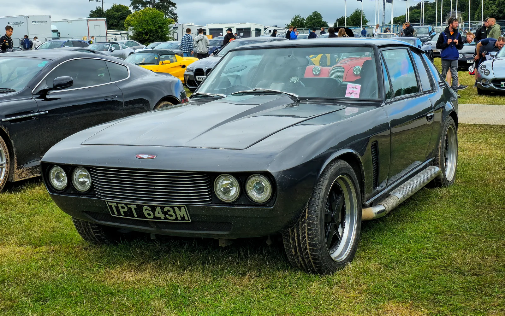
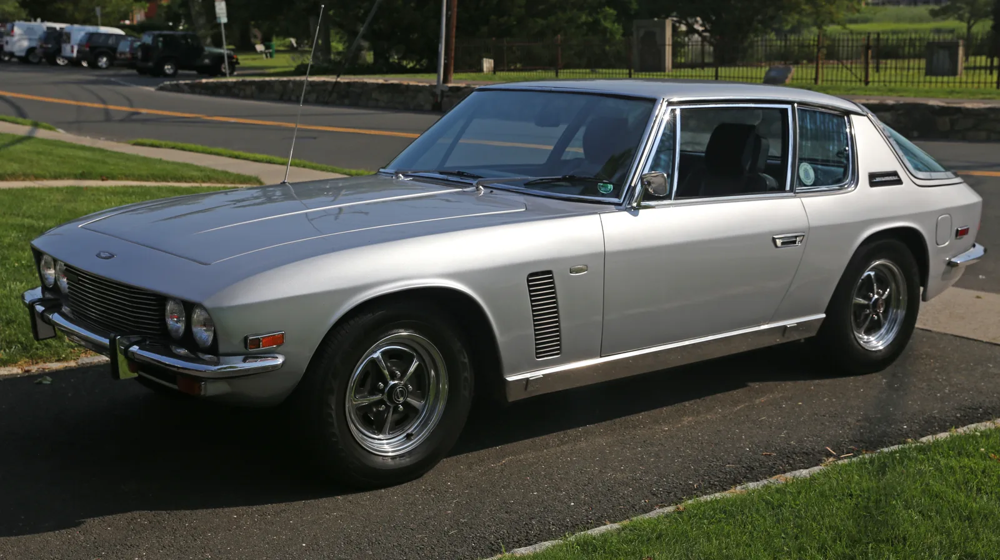
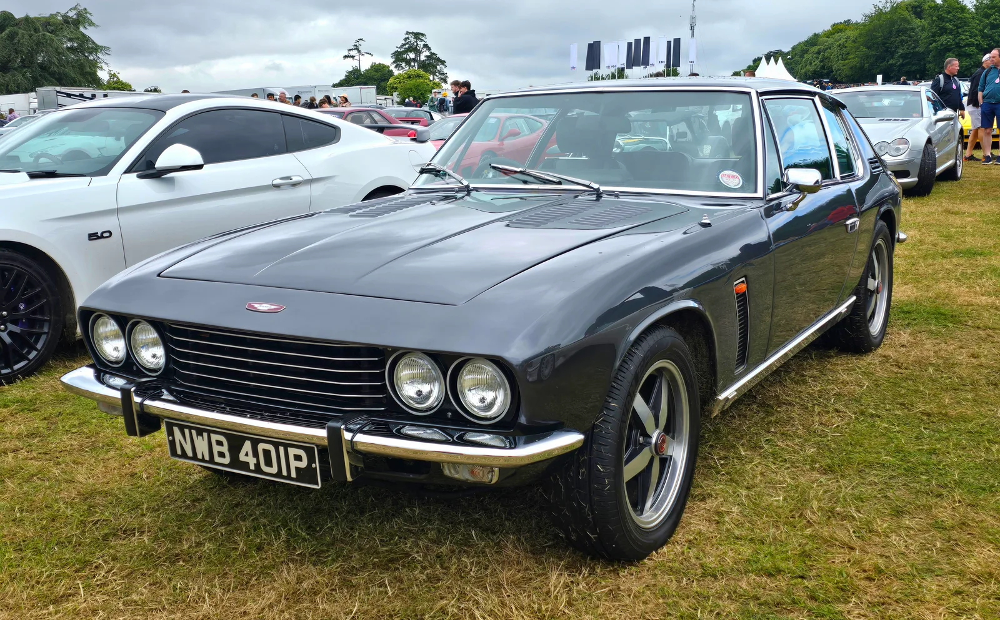
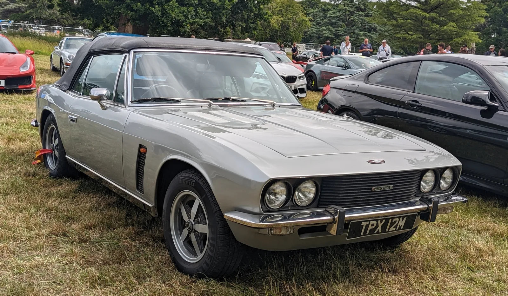

▲ 1973년식 젠센 인터셉터. 신형 GTX는 이 차의 계보를 60년 만에 잇는다 ⓒ Calreyn88, Wikimedia Commons (CC BY-SA 4.0)
1960년대 영국을 대표하던 GT카 젠센 인터셉터가 60년 만에 돌아왔다. 젠센 인터내셔널 오토모티브가 내놓은 신형 '인터셉터 GTX'다. 6.8리터 슈퍼차저 V8로 973마력을 내지만, 조건이 하나 붙는다. 번호판을 달 수 없는 트랙 전용 모델이라는 점이다.
1. 973마력, 그런데 여유가 더 있다

▲ 1971년식 젠센 인터셉터 MkII. 원형 모델은 미국제 V8을 얹은 영국 GT카였다 ⓒ Mr.choppers, Wikimedia Commons (CC BY-SA 3.0)
심장은 GM의 6.2리터 V8을 기반으로 배기량을 6.8리터까지 키우고 2.65리터 슈퍼차저를 얹은 구성이다. 현재 세팅은 973마력이지만, 제작사는 이 엔진이 최고 1,217마력, 최대토크 152.0kgf·m 이상까지 대응하도록 설계됐다고 밝혔다. 지금 출력이 상한이 아니라는 뜻이다.
동력은 6단 시퀀셜 트랜스액슬을 거쳐 뒷바퀴로 전달된다. 변속기를 뒤쪽에 배치하는 트랜스액슬 구조는 앞뒤 무게 배분에 유리해 고성능 GT카에서 자주 쓰이는 방식이다.
2. 왜 트랙 전용인가

▲ 1975년식 젠센 인터셉터 MK III. 원형의 실루엣은 신형 GTX에도 이어진다 ⓒ Calreyn88, Wikimedia Commons (CC BY-SA 4.0)
공도 등록을 하려면 배출가스와 충돌 안전, 보행자 보호 등 각국의 인증을 통과해야 한다. 소량 생산 업체가 이 절차를 모두 밟는 것은 비용과 시간 면에서 부담이 크다. 트랙 전용으로 내놓으면 이 문턱을 건너뛰고 성능에만 집중할 수 있다.
다만 젠센은 여기서 멈추지 않을 계획이다. GTX를 바탕으로 공도용 GTR과 GT 모델을 개발한다고 밝혔다. 트랙 전용 모델을 먼저 내고 공도용을 뒤이어 내는 순서다.
3. 60년 전의 인터셉터

▲ 젠센 인터셉터 컨버터블. 원형은 영국 차체에 미국 V8을 얹는 구성으로 유명했다 ⓒ Calreyn88, Wikimedia Commons (CC BY-SA 4.0)
원형인 젠센 인터셉터는 1960년대 중반 등장해 1970년대까지 생산된 영국 GT카다. 이탈리아 디자인의 차체에 미국제 대배기량 V8을 얹는 구성으로, 당시로서는 흔치 않은 조합이었다. 신형 GTX가 GM V8을 기반으로 한 것도 이 전통과 무관하지 않다.
4. 정리
체크포인트
- GTX는 973마력 트랙 전용 모델이다. 번호판 등록이 불가능하다.
- 엔진은 최대 1,217마력까지 대응하도록 설계됐다.
- 이후 공도용 GTR·GT가 개발될 예정이다.
- 가격·생산 시기·국내 판매 계획은 모두 미공개다.